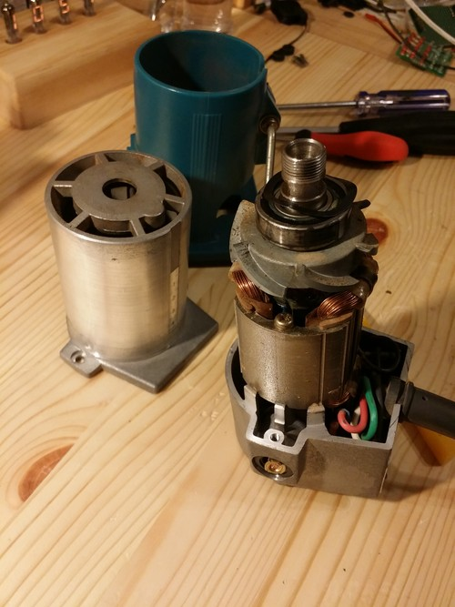

Bought this trimmer
Makita 3700 on auction for 15 USD delivered in junk state, the on/off switch was broken. So I opened the baby, dismantled it, gave it a good vacuuming/brushing cleaning and simply changed the switch for one I bought years ago in Hongkong because it lkookd beefy and ... cool. Perfect fit. A little sweat when remounting it, but these things are made to be serviced (thank you Japanese engineers), so using the manual, gentleness and good sense, everything was back in order.
PS: also some light hammer strokes helped for the last centimeter when reassembling the body (^_^)
Reference:
Parts breakdown document from Makita.
 The new switch: 15 HKD/ 2 USD
The new switch: 15 HKD/ 2 USD

The trimmer opened
Voila, work finished with the sick puppy at the front and the new one at the top
So nice breakdown... The culprit was #7